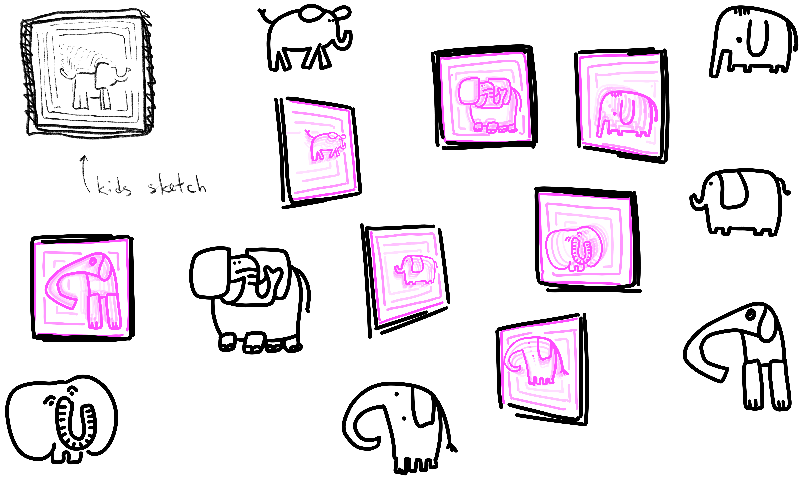

Concept sketch / hand drawing

Infinity Mirror / Portal effect
My 8-year-old brother, obsessed with physics encyclopedias, tried to explain to me that the universe is infinite. My five-year-old mind collapsed: I couldn't imagine infinity, but I couldn't imagine an end either because something must exist beyond the wall.
Tormented by this logical trap all day, I invented a solution to stop the anxiety: I decided that Pink Elephants live in the gap between the End and Infinity.
This installation is a portal back to that solution. Using an infinity mirror tunnel, I materialized that protective fantasy. It explores how we use absurdity and imagination to reconcile with the terrifying concepts that pure logic cannot resolve.